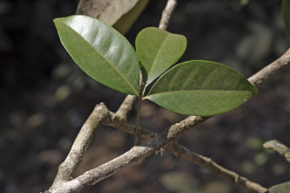
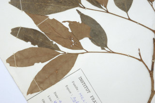
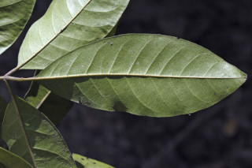
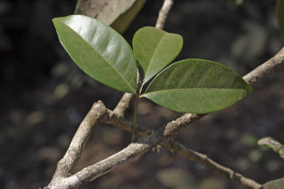
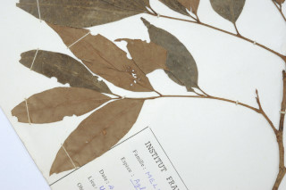
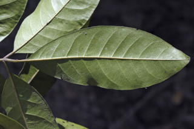

Trees slightly buttressed, up to 25 m tall.
25 ಮೀ. ಎತ್ತರದವರೆಗೆ ಬೆಳೆಯುವ ಸ್ವಲ್ಪಮಟ್ಟಿಗೆ ಆನಿಕೆಗಳನ್ನುಳ್ಳ ಮರಗಳು.
ചെറുതായി വപ്രമൂലമുള്ള, 25 മീറ്റര് ഉയരമുള്ള മരങ്ങള്.
மரங்கள் தாங்கு வேர்கள் (பட்ரஸ்டு) உடையவை, 25 மீ. உயரம் வரை வளரக்கூடியது
Bark reddish brown, flaky lenticellate; blaze pinkish brown.
ತೊಗಟೆ ಕೆಂಪು ಮಿಶ್ರಿತ ಕಂದು ಬಣ್ಣದಲ್ಲಿದ್ದು ಚಕ್ಕೆ ರೂಪದಲ್ಲಿದ್ದು ವಾಯುವಿನಿಮಯ ಬೆಂಡು ರಂಧ್ರಗಳ ಸಮೇತವಿರುತ್ತದೆ;ಕಚ್ಚು ಮಾಡಿದ ಜಾಗ ನಸುಗೆಂಪಿನಿಂದ ಕೂಡಿದ ಕಂದು ಬಣ್ಣದಲ್ಲಿರುತ್ತದೆ.
ശ്വസന രന്ധ്രങ്ങളുള്ള, അടര്ന്നിളകുന്ന, ചുവപ്പുകലര്ന്ന തവിട്ട് നിറമുള്ള പുറംതൊലി; വെട്ട്പാടിന് പിങ്ക് കലര്ന്ന തവിട്ട് നിറം.
மரத்தின் பட்டை சிவப்பு கலந்த ப்ரவுன் நிறமானது, பெரிய செதில்கள் போன்று உதிருபவை, லெண்டிசெல் உடையது; உள்பட்டை பிங்க் கலந்த ப்ரவுன் நிறமானது.
Young branchlets, slender, densely covered with lepidote scales.
ಎಳೆಯ ಕಿರುಕೊಂಬೆಗಳು ತೆಳುವಾಗಿರುತ್ತವೆ ಮತ್ತು ಹೊಟ್ಟು ರೂಪದ ಶಲ್ಕೆಗಳಿಂದ ದಟ್ಟವಾಗಿ ಆವರಿಸಿಕೊಂಡಿರುತ್ತದೆ.
കനത്തില് പരുക്കന് ശല്ക്കങ്ങള് നിറഞ്ഞ, നേര്ത്ത, ഇളം ഉപശാഖകള്.
சிறிய நுனிக்கிளைகள் மெலிந்தவை, அடர்த்தியாக லெப்பிடோட் செதில்களுடையவை.
Leaves compound, imparipinnate, alternate, spiral; rachis 4.5-7 cm long, angled, lepidote; petiolule 0.4- 1cm, usually terminal one longer than others, canaliculate; leaflets 2 to 3 opposite or subopposite pairs and one at terminal, 6-12 x 2.4-5 cm, elliptic or elliptic-ovate, apex bluntly acute to acuminate, base acute or sometimes slightly asymmetric, margin entire, chartaceous, densely minute brown lepidote_scaly beneath, smooth above; midrib slightly raised; secondary_nerves slender, 6-12 pairs; tertiary_nerves broadly reticulate.
ಎಲೆಗಳು ಸಂಯುಕ್ತಪರ್ಣಿಗಳಾಗಿದ್ದು ಬೆಸ ಸಂಖ್ಯೆಯ ಗರಿರೂಪದಲ್ಲಿರುತ್ತವೆ ಮತ್ತು ಪರ್ಯಾಯ ಮತ್ತು ಸುತ್ತು ಜೋಡನಾ ವ್ಯವಸ್ಥೆಯಲ್ಲಿರುತ್ತವೆ;ಅಕ್ಷದಿಂಡು 4.5-7 ಸೆಂ.ಮೀ.ಉದ್ದವಿದ್ದು ಕೋನಯುಕ್ತವಾಗಿರುತ್ತದೆ ಮತ್ತು ಹೊಟ್ಟು ರೂಪದ ಶಲ್ಕೆಗಳಿಂದ ಕೂಡಿರುತ್ತವೆ; ಕಿರುತೊಟ್ಟುಗಳು ಕಾಲುವೆಗೆರೆ ಸಮೇತವಿದ್ದು 0.4.ರಿಂದ 1 ಸೆಂ.ಮೀ. ಉದ್ದವಿದ್ದು ತುದಿ ಕಿರುತೊಟ್ಟು ಉಳಿದವುಗಳಿಗಿಂತ ಉದ್ದವಾಗಿರುತ್ತವೆ;ಕಿರುಎಲೆಗಳು 2 ರಿಂದ 3 ಅಭಿಮುಖಿ ಅಥವಾ ಉಪಅಭಿಮುಖಿಗಳಾಗಿರುವ ಜೋಡಿಗಳಿದ್ದು ಅಗ್ರದಲ್ಲಿ ಒಂದು ಕಿರುಎಲೆಯನ್ನು ಹೊಂದಿರುತ್ತವೆ;ಕಿರುಎಲೆಗಳು 6-12 X 2.4-5 ಸೆಂ.ಮೀ. ಗಾತ್ರದಲ್ಲಿದ್ದು ಅಂಡವೃತ್ತದ ಅಥವಾ ಅಂಡವೃತ್ತ-ಅಂಡದ ಆಕಾರದಲ್ಲಿದ್ದು ಮೊಂಡಾಗ್ರವುಳ್ಳ ಚೂಪಾದುದರಿಂದ ಕ್ರಮೇಣವಾಗಿ ಚೂಪಾಗುವ ರೀತಿಯ ತುದಿ ಹೊಂದಿರುತ್ತವೆ;ಬುಡ ಚೂಪಾಗಿರುತ್ತದೆ ಕೆಲವು ವೇಳೆ ಅಸಮವಾಗಿರುತ್ತದೆ;ಅಂಚು ನಯವಾಗಿರುತ್ತದೆ;ಮೇಲ್ಮೈ ಕಾಗದವನ್ನೋಲುವ ಮಾದರಿಯಲ್ಲಿರುತ್ತದೆ;ಪತ್ರಗಳ ತಳಭಾಗ ಕಂದು ಬಣ್ಣದ ಸೂ ಕ್ಷ್ಮವಾದ ಹೊಟ್ಟು ರೂಪದ ಶಲ್ಕೆಗಳಿಂದ ದಟ್ಟವಾಗಿ ಆವರಿಸಿಕೊಂಡಿರುತ್ತದೆ, ಪತ್ರಗಳ ಮೇಲ್ಭಾಗ ನಯವಾಗಿರುತ್ತದೆ; ಮಧ್ಯನಾಳ ಕೊಂಚ ಮೇಲೆದ್ದಿರುತ್ತದೆ;ಎರಡನೇ ದರ್ಜೆಯ ನಾಳಗಳು 6-12 ಜೋಡಿಗಳಿದ್ದು ತೆಳುವಾಗಿ -ರುತ್ತವೆ;ಮೂರನೇ ದರ್ಜೆಯ ನಾಳಗಳು ವಿಶಾಲ ಜಾಲ ಬಂಧ ನಾಳ ವಿನ್ಯಾಸದಲ್ಲಿರುತ್ತವೆ.
ഇലകള്, ഏകാന്തര ക്രമത്തില്, സര്പ്പിളമായി അടുക്കിയ അസമപിച്ഛക ബഹുപത്രങ്ങളാണ്; പരുക്കന് ശല്ക്കങ്ങള് നിറഞ്ഞതും, കോണുള്ളതുമായ, മുഖ്യാക്ഷത്തിന് 4.5 സെ.മീ മുതല് 7 സെ.മീ വരെ നീളം; ചാലുള്ള പത്രകഞെട്ടിന് 0.4 സെ.മീ മുതല് 1 സെ.മീ വരെ നീളമുണ്ട്; സാധാരണയായി അറ്റത്തുള്ള ഒരെണ്ണത്തിന് മറ്റുള്ളവയേക്കാള് നീളമുണ്ടാകും; ഒരെണ്ണം അഗ്രത്തായിരിക്കുന്ന, 2 മുതല് 3 വരെയുള്ള സമ്മുഖമോ ഉപസമ്മുഖമോ ജോഡികളായുള്ള പത്രകങ്ങള്, പത്രകഫലകത്തിന് 6 സെ.മീ മുതല് 12 സെ.മീ വരെ നീളവും 2.4 സെ.മീ മുതല് 5 സെ.മീ വരെ വീതിയും, ആകൃതി ദീര്ഘവൃത്താകാരമോ ദീര്ഘവൃത്താകാര-അണ്ഡാകാരമോ ആണ്, പത്രാഗ്രം മുനപ്പില്ലാത്ത നിശിതാഗ്രം തൊട്ട് ദീര്ഘാഗ്രം വരെയാകാം, പത്രാധാരം നിശിതമോ ചിലപ്പോള് ലഘുവായി അസമമോ ആണ്, അരികുകള് അവിഭജിതമാണ്, കടലാസ് പോലത്തെ പ്രകൃതം, കീഴെ കനത്തില് സൂക്ഷ്മമായ, പരുക്കന് ശല്ക്കങ്ങള് നിറഞ്ഞതാണ്, മുകളില് മിനുസമാണ്; മുഖ്യസിര ലഘുവായി ഉയര്ന്നതാണ്; 6 മുതല് 12 വരെ ജോഡി, നേര്ത്ത, ദ്വിതീയ ഞരമ്പുകള്; ത്രിതീയ ഞരമ്പുകള് വീതിയേറിയ ജാലിതമാണ്.
இலைகள் கூட்டிலைகள், ஒற்றைபடை சிறகுவடிவக்கூட்டிலைகள், மாற்றுஅடுக்கமானவை, சுழல் போன்று அமைந்தவை; கூட்டிலையின் மத்தியகாம்பு (ராக்கிஸ்) 4.5-7 செ.மீ. நீளமானது, கோணங்களுடையது, லெப்பிடோட் உடையது; சிற்றிலைக்காம்பு 0.4-1 செ.மீ. நீளமானது, பொதுவாக நுனியிலுள்ள சிற்றிலைக்காம்பு மற்ற பக்கவாட்டிலுள்ளவைவிட நீளமானது, குறுக்குவெட்டுத் தோற்றத்தில் கேனாலிகுலேட்; சிற்றிலை 2-3 ஜோடிகள் எதிராகமைந்தது அல்லது கிட்டதட்ட எதிராகமைந்தது, மற்றும் நுனியில் ஒற்றை சிற்றிலை கொண்டது, 6-12 X 2.4-5 செ.மீ. நீள்வட்டம் அல்லது நீள்வட்டம்-முட்டை வடிவானது, அலகின் நுனி கூரியதுடன் முனை மழுங்கியது முதல் அதிக்கூரியது, அலகின் தளம் கூரியது அல்லது சிலசமயங்களில் சிறிது சமமற்றது, அலகின் விளிம்பு முழுமையானது, சார்ட்டேசியஸ், அலகின் பின்புறத்தில் அடர்த்தியாக நுண்ணிய லெப்பிடோட் ப்ரவுன் நிறமான செதில்களுடையது, அலகின் மேற்பரப்பில் வழுவழுப்பானது; மையநரம்பு மேற்பரப்பில் அலகின் பரப்பைவிட சிறிது உயர்ந்தது; இரண்டாம் நிலை நரம்புகள் மெலிந்தவை 6-12 ஜோடிகள்; மூன்றாம் நிலை நரம்புகள் அகன்ற வலைப்பின்னல் போன்றது.
Flowers unisexual; inflorescence axillary or lateral panicles, lepidote_scaly.
ಹೂಗಳು ಏಕಲಿಂಗಿಗಳಾಗಿದ್ದು ಹೊಟ್ಟು ರೂಪದ ಶಲ್ಕೆಗಳಿಂದ ಕೂಡಿದ ಪುನರಾ -ವೃತ್ತಿಯಾಗಿ ಕವಲೊಡೆಯುವ ಮಾದರಿಯ ಅಕ್ಷಾಕಂಕುಳಿನಲ್ಲಿನ ಅಥವಾ ಪಾರ್ಶ್ವದಲ್ಲಿನ ಪುಷ್ಪಮಂಜರಿಗಳಲ್ಲಿರುತ್ತವೆ.
പൂക്കള് ഏകലിംഗികളാണ്; പരുക്കന് ശല്ക്കങ്ങള് നിറഞ്ഞ പൂങ്കുലകള് കക്ഷീയമോ പാര്ശ്വസ്ഥമോ ആയ പാനിക്കിളുകളാണ്.
மலர்கள் ஒர்பாலானவை; மஞ்சரி இலைக்கோணங்களில் அல்லது பக்கவாட்டிலமைந்த பேனிக்கிள், லெப்பிடோட் செதில்களுடையது.
Berry, 2.5 cm long, subglobose or asymmetric with depressed apex, longitudinally wrinkled when dry, 3-loculed, lepidote_scaly; seeds 1 per locule.
ಬೆರ್ರಿಗಳು 2.5 ಸೆಂ.ಮೀ. ಉದ್ದವಿದ್ದು ಉಪಗೋಳಾಕಾರ ಅಥವಾ ಅಸಮವಾಗಿರುತ್ತದೆ ಅಗ್ರ ಅದುಮಿದಂತಿರುತ್ತದೆ ಮತ್ತು ಹೊಟ್ಟು ರೂಪದ ಶಲ್ಕೆಗಳಿಂದ ಆವೃತವಾಗಿರುತ್ತವೆ;ಬೆರ್ರಿಗಳು ಒಣಗಿದಾಗ ಸುಕ್ಕು ಸುಕ್ಕಾಗಿರುತ್ತವೆ;ಕೋಶಗಳು 3 ಇರುತ್ತವೆ ಮತ್ತು ಪ್ರತಿ ಕೋಶದಲ್ಲಿ ಒಂದು ಬೀಜವಿರುತ್ತದೆ.
ഓരോ അറയിലും ഓരോ വിത്തുവീതമുള്ള, 3 അറകളുള്ള കായ, ഉണങ്ങുമ്പോള് നീളത്തില് ചുളിവുകളുള്ള, കുഴിഞ്ഞ അഗ്രമുള്ള, 2.5 സെ.മീ നീളമുള്ള, ഉപഗോളാകാരമോ അസമമോ ആയ ബെറിയാണ്.
முழுச்சதைகனி (பெர்ரி), 2 செ.மீ. நீளமானது, கோளவடிவானது அல்லது சமமற்றதுடன் நுனி அழுந்தியவை, உலரும் போது நீள்வாக்கில் சுருங்கிய கோடுகளுடையது. 3-4 அறைகளுடையது, லெப்பிடோட் செதில்களுடையது; விதை அறைக்கு ஒன்றாக காணப்படுபவை.


 




